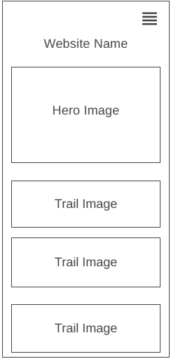
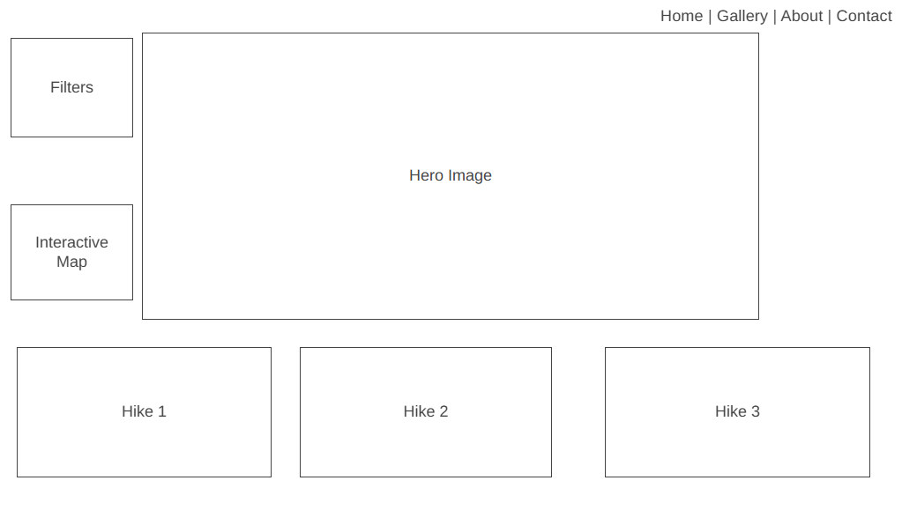

Site Name
Name: Utah Trail Finder (utahtrailfinder.org)
Description: I chose this name because it is direct, memorable, and immediately tells the target audience exactly what the site offers: an accessible directory for discovering trails throughout Utah.
Site Purpose
The purpose of Utah Trail Finder is to provide an accessible, responsive, and easy-to-use directory for individuals looking to explore local hiking paths. The site provides essential trail statistics, maps, dynamic filtering based on difficulty/location, a structured equipment packing guide, and a community submission form to recommend new paths.
Target Audience Scenarios
Scenario 1: "I want to go on a weekend hike with a group of friends, but some of us are beginners. Where can I find an easy local trail with good scenery?"
Answer: The visitor can use the dynamic filter system on the Directory page, click the 'Easy' button, and instantly view matching beginner-friendly trail cards.
Scenario 2: "I found an amazing unlisted hiking spot near my area and want to share it with the community. How do I send it in?"
Answer: The visitor can navigate to the Contact/Suggest page and fill out the structured HTML submission form to send over the trail details.
Color Schema
This site applies a natural, earthy color palette tailored to outdoor exploration:
| Color Palette | Hex Value | Usage Role |
|---|---|---|
| Primary Dark | #2D5A27 (Forest Green) | Headers, main navigation bars, and primary UI buttons. |
| Accent | #D4A373 (Warm Sand) | Active link states, highlighting badges, and border definitions. |
| Background Light | #F4F1DE (Off-White/Cream) | Main site canvas background to ensure warm, readable contrast. |
| Text Base | #1F2421 (Charcoal) | All standard paragraph blocks and body reading typography. |
Typography
Heading Font: Montserrat (Sans-Serif)
Used exclusively for titles, main section headings (H1, H2, H3), and primary navigation options to establish a strong, modern visual hierarchy.
Body Font: Open Sans (Sans-Serif)
Used for all long-form paragraphs, descriptions, tables, and form labels to maximize clean readability across mobile devices and screens.
Wireframes Layout Plan
The eventual multi-page application will be organized with a mobile-first responsive architecture using modern layout modules (CSS Grid & Flexbox).
Mobile View Wireframe

Desktop View Wireframe
